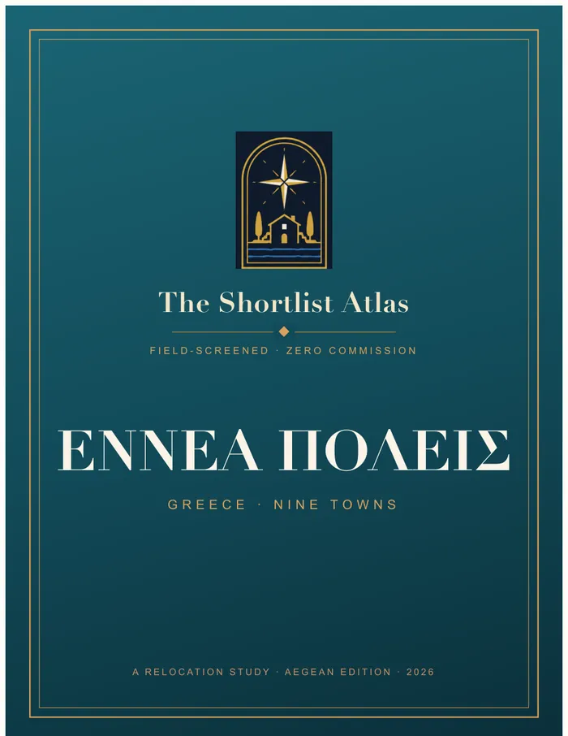
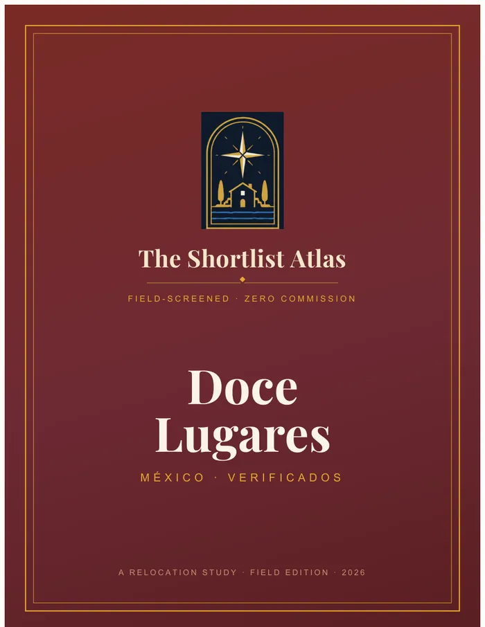
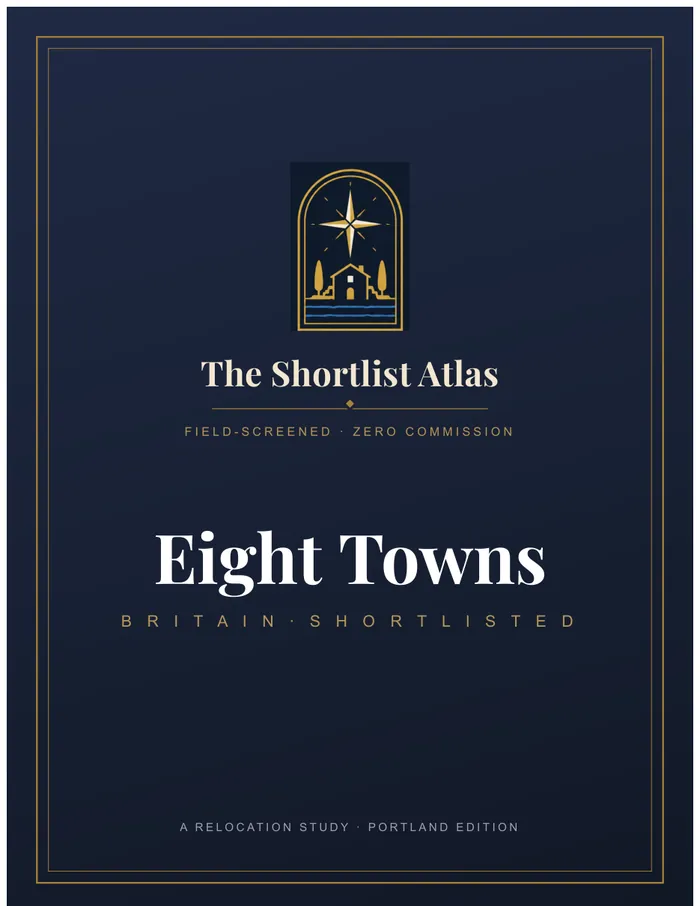
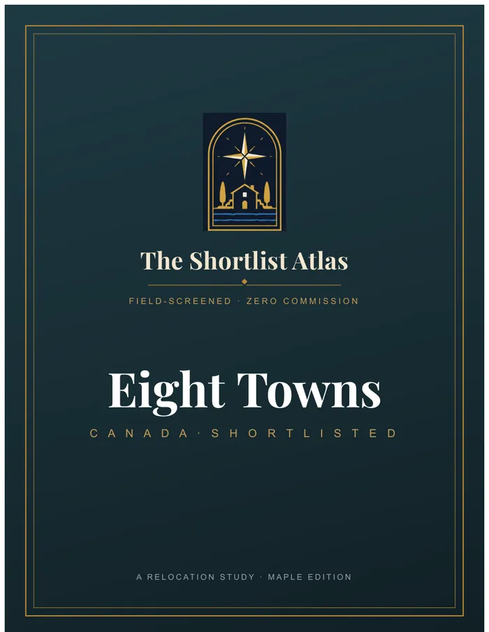
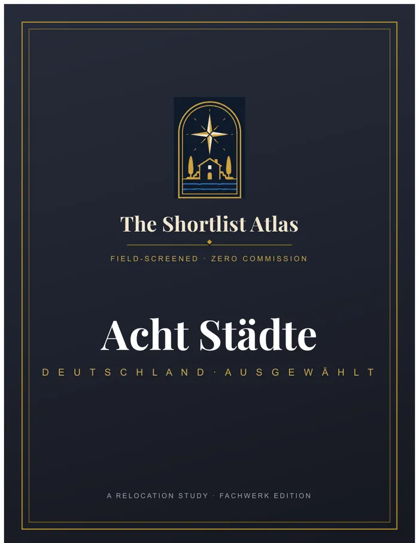
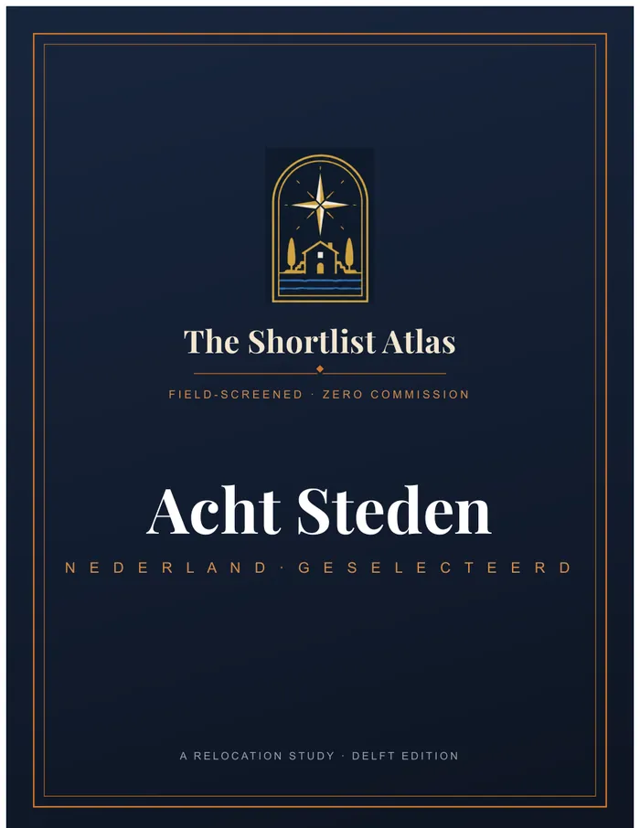
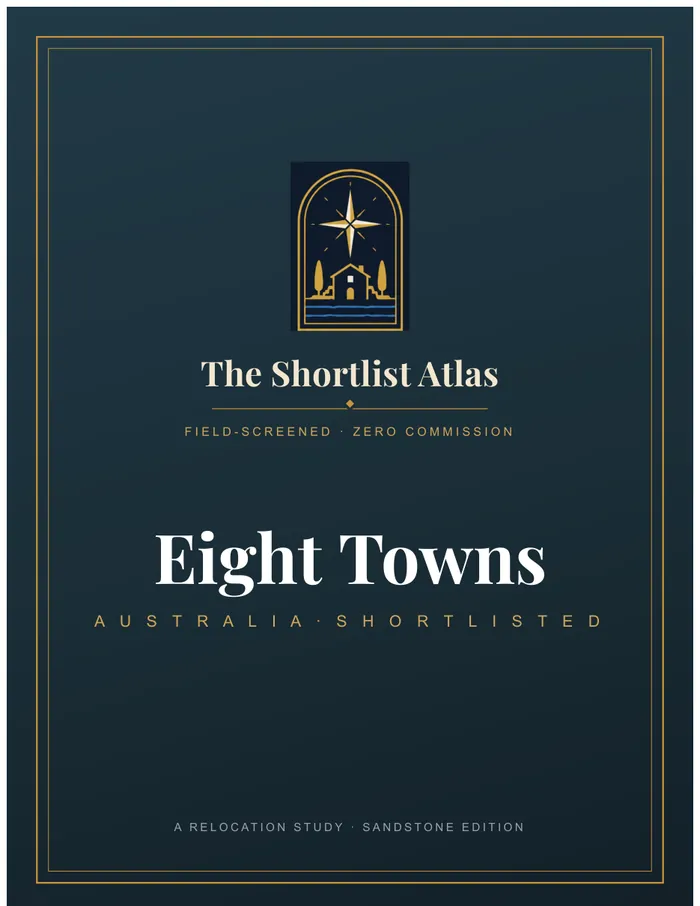
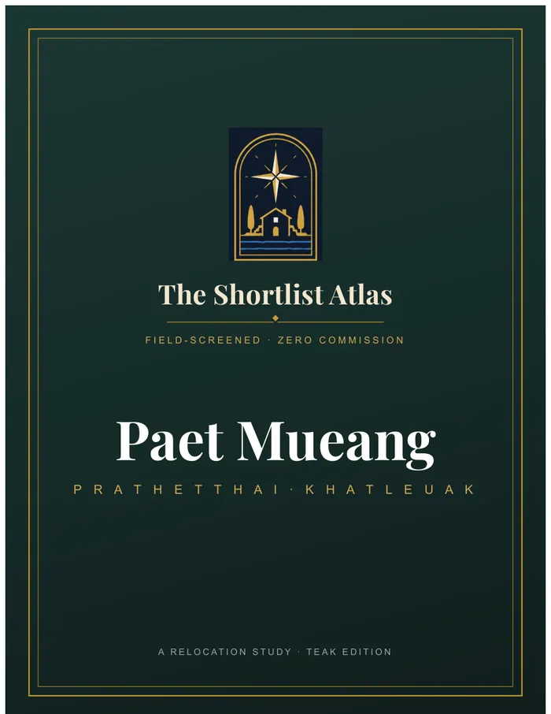

Get a Feel for the Place
Historic streets, scenery and local culture—alongside the shops, healthcare and transport that shape daily life.
Perhaps it’s a second home. Perhaps it’s a new beginning. Start with the places that move you, then get to know the life behind the view.
Fourteen country Atlases bring the research together: distinctive towns, daily life, buying costs and the questions worth asking before you commit.
Find Your Country Atlas ↓Historic streets, scenery and local culture—alongside the shops, healthcare and transport that shape daily life.
Set the appeal beside the costs, rules and risks, and know exactly what to ask a local professional.
Start with the free country overview. Buy the full Atlas when you want every detail in one place.
 Explore This Country ↗
Explore This Country ↗
Harbor mornings in Brittany. Market days in the Dordogne. A lakefront evening in Annecy. Compare eight very different versions of life in France, with the costs and practical questions laid out before you fall for a house.
The Shortlist Dinan, Bayeux, Vannes, Lyons-la-Forêt, La Rochelle, Uzès, Sarlat-la-Canéda, Annecy
Research reviewed 24 September 2026 · Secure checkout through Fourthwall
Roman columns in Évora, canal-side walks in Aveiro, student life along Coimbra’s Mondego. These eight towns show how varied a Portuguese home base can be. Find the setting you love, then compare everyday services, purchase costs and rental rules.
The Shortlist Évora, Aveiro, Óbidos, Coimbra, Braga, Guimarães, Viana do Castelo, Tomar
Research reviewed 24 September 2026 · Secure checkout through Fourthwall
Look beyond the beach: Cuenca’s hanging houses, Albarracín’s red walls, a long lunch near Trujillo’s great plaza. Explore eight inland choices for a second home or a move, with a clear view of transport, seasons, local services and property checks.
The Shortlist Cuenca, Sigüenza, Albarracín, Soria, Aguilar de Campoo, Sos del Rey Católico, Barbastro, Trujillo
Research reviewed 24 September 2026 · Secure checkout through Fourthwall
A wine village in Monferrato. Brick streets in Abruzzo. Stone houses above the Cinque Terre. Seven Italian towns offer a closer look at life beyond the major cities, with municipal home programs, renovation obligations and practical costs explained.
The Shortlist Albugnano, Montalto Pavese, Montieri, Penne, Fabbriche di Vergemoli, Casteldelci, Pignone
Research reviewed 24 September 2026 · Secure checkout through Fourthwall

Explore This Country ↗Harbor evenings in Nafplio, island life in Syros, a mountain escape from Ioannina. Compare nine Greek destinations for the life you would actually lead there, including winter transport, water supply, healthcare and the rules that affect a home purchase.
The Shortlist Kavala, Nafplio, Syros, Andros, Naxos, Ioannina, Chania, Corfu, Santorini
Research reviewed 24 September 2026 · Secure checkout through Fourthwall

Explore This Country ↗Picture Campeche’s walled streets, Oaxaca’s markets and the waterfront in La Paz. Twelve places offer twelve very different ways to make Mexico part of your life. Compare the atmosphere and everyday services alongside ownership rules, local conditions and the questions to ask before buying.
The Shortlist Mérida, Querétaro, Campeche, San Miguel de Allende, Lake Chapala · Ajijic, Puerto Vallarta, Oaxaca City, Mexico City, Playa del Carmen, La Paz, Los Cabos, Sayulita · Riviera Nayarit
Research reviewed 24 September 2026 · Secure checkout through Fourthwall

Explore This Country ↗Roman baths and Georgian crescents. Cathedral bells and a market square. A round of golf beside the North Sea. Eight British towns pair history with everyday life, helping you compare the setting, connections, purchase costs and upkeep of a home there.
The Shortlist Bath, Winchester, Chester, Stamford, Ludlow, St Andrews, Durham, Harrogate
Research reviewed 26 September 2026 · Secure checkout through Fourthwall

Explore This Country ↗Painted harbor houses in Lunenburg, theater nights in Stratford, mountain mornings above Kootenay Lake. Explore eight Canadian bases with very different seasons and rhythms. The Atlas explains the foreign-buyer restrictions and practical costs to check before planning a purchase.
The Shortlist Lunenburg, Knowlton (Lac-Brome), Wolfville, Stratford, Niagara-on-the-Lake, Charlottetown, Saint Andrews, Nelson
Research reviewed 26 September 2026 · Secure checkout through Fourthwall

Explore This Country ↗A riverside table in Bamberg, brick-gabled streets in Lüneburg, the lake on your doorstep in Konstanz. Compare eight German towns for a second home or a fresh start, from airport connections and healthcare to taxes, rental rules and the building itself.
The Shortlist Bamberg, Lüneburg, Regensburg, Heidelberg, Freiburg im Breisgau, Görlitz, Konstanz, Landshut
Research reviewed 26 September 2026 · Secure checkout through Fourthwall

Explore This Country ↗Cycle from Haarlem toward the dunes, browse Deventer’s book market, or take a canal-side walk in Leiden. Eight Dutch towns offer distinct versions of a well-connected life. Compare housing costs, local services, rental restrictions and the flood and foundation checks that matter.
The Shortlist Haarlem, Deventer, Amersfoort, Leiden, Maastricht, 's-Hertogenbosch, Zutphen, Middelburg
Research reviewed 26 September 2026 · Secure checkout through Fourthwall

Explore This Country ↗Picture gold-rush streets in Castlemaine, garden seasons in Bowral and whales off Albany’s granite coast. Eight regional Australian towns give you room to imagine a different daily life. Start with the rules on foreign ownership, then compare new-home options, travel, services and local risks.
The Shortlist Launceston, Castlemaine, Bendigo, Bowral, Ballarat, Orange, Albany, Kiama
Research reviewed 26 September 2026 · Secure checkout through Fourthwall
 Explore This Country ↗
Explore This Country ↗
Cherry blossom over Hirosaki’s moat. Pottery in Karatsu. Snow along Otaru’s canal. Explore eight Japanese towns through their craft, history and everyday life, with clear information on transport, healthcare, winters and the property checks behind a longer stay.
The Shortlist Hirosaki, Matsue, Kanazawa, Karatsu, Tamba-Sasayama, Aizu-Wakamatsu, Otaru, Takayama
Research reviewed 26 September 2026 · Secure checkout through Fourthwall
Reedbeds at Suncheon Bay, royal tombs in Gyeongju, mountain trails above Sokcho. These eight Korean places offer more than a stop on an itinerary. Compare year-round living, travel to Seoul, healthcare and the rules and local conditions that shape ownership.
The Shortlist Suncheon, Gyeongju, Chuncheon, Gangneung, Yeongju, Tongyeong, Gongju, Sokcho
Research reviewed 26 September 2026 · Secure checkout through Fourthwall

Explore This Country ↗A morning market in Phuket Town, an evening beside the Mekong, a seaside base in Hua Hin. Compare eight Thai destinations for a longer stay or a new home, with ownership and lease routes, healthcare, seasons and rental restrictions explained plainly.
The Shortlist Hua Hin, Phuket Town, Chiang Mai, Udon Thani, Khon Kaen, Nong Khai, Pak Chong, Koh Samui
Research reviewed 26 September 2026 · Secure checkout through Fourthwall